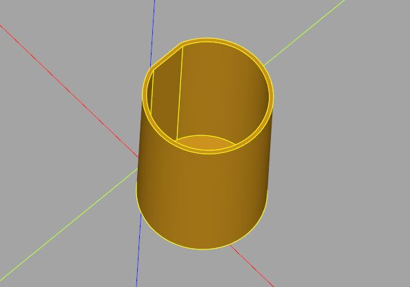

殼的建立
November 26, 2021很多時候，需要為模型建立一層殼，像是盒子、筆筒、花瓶、中空球等。
運用減集
如果是具有輻射概念的形狀，例如方形、圓等，要建立殼很簡單，將形狀大的包住小的後擠出，就會有殼了。例如：
import cadquery as cq
w = 100
thickness = 1
height = 50
box = (cq.Workplane()
.rect(w, w).rect(w - thickness, w - thickness).extrude(height) # 牆
.box(w, w, thickness) # 底部
)
這會建立以下的模型：
然而，對於複雜的形狀，如上減去一個厚度，或者單純地縮放形狀，無法剛好讓殼的厚度相同，這時可以透過 offset2D 方法，例如：
import cadquery as cq
thickness = 1
height = 50
result = (cq.Workplane()
# 牆
.threePointArc((10, 20), (0, 10)).close().offset2D(-thickness)
.moveTo(0, 0).threePointArc((10, 20), (0, 10)).close()
.extrude(height)
# 底部
.moveTo(0, 0).threePointArc((10, 20), (0, 10)).close()
.extrude(thickness)
)
offset2D 方法的作用，相當於沿著形狀邊緣，依指定的距離走一圈，距離可以是正或負數，正數的話就是沿著形狀外圍走，負就是沿著形狀內緣走，這會建立以下的模型：

offset2D 針對的是 Workplane 中管理的物件，也就是說，如果 Workplane 中有多個物件，就會各自 offset。例如：
import cadquery as cq
r1 = (cq.Workplane().rect(100, 100).rect(50, 50)
.offset2D(11)
.extrude(1)
)
r2 = (cq.Workplane().rect(100, 100).rect(50, 50)
.offset2D(11, 'intersection')
.extrude(1)
.translate((150, 0)
)
offset2D 預設在邊角處會使用圓弧，若指定 'intersection' 則會採用尖角，這會顯示以下的圖形：
也可以建立 3D 實體，以減集的方式來製作殼。例如：
import cadquery as cq
r = 10
thickness = 2
result = (
cq.Workplane().sphere(r) -
cq.Workplane().sphere(r - thickness) -
cq.Workplane().box(r / 2, r / 2, r * 3)
)
因為球殼構成了封閉空間，這個範例故意將球打穿，只是為了看得出確實構成了球殼：
shell 方法
只不過這種減集的方式，對於複雜的模型就不適用了，你需要 3D 版本的 offset，才能運用減集製作殼，不過這很複雜，然而，Workplane 提供了方便的 shell 方法來製作殼：
import cadquery as cq
thickness = 2
height = 50
result = (cq.Workplane()
.center(0, 0).threePointArc((10, 20), (0, 10)).close()
.extrude(height)
.shell(thickness)
.faces('>Z')
.hole(10)
)
shell 可以指定正或負值，若是正，往外增殼，若是負，往內做殼，做出來的殼會是封閉的，因此範例中故意打了個洞，這樣才看得出殼：
shell 預設會在每個面建立殼，若某些面不想建立殼，可以用 faces 選擇，被選擇的面會被「剔除」，未被選擇的面會建立殼。例如：
import cadquery as cq
result = (cq.Workplane()
.box(2, 2, 2)
.faces('>X or <X')
.shell(-0.2)
)
這個範例選擇了 X 軸上的兩個最遠面，因此這兩個面不會有殼，結果會是：
選擇面不建立殼的方式，最後必須至少留下兩個連續的面，shell 方法才能運作。